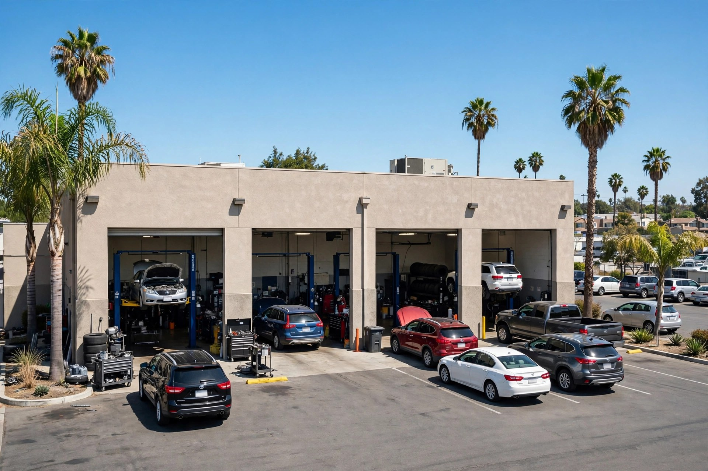
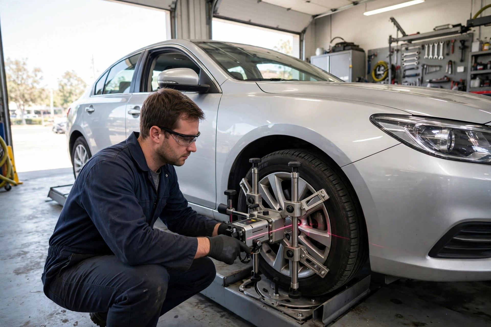

Oil Changes & Tune-Ups
Oil and filter changes plus tune-ups to keep your engine running strong.

Sacramento, California · Auto repair & maintenance
JC Auto Service Center keeps Sacramento drivers on the road with full-service auto repair — brakes, A/C, diagnostics and more, with clear prices and careful work.
What we do
Oil and filter changes plus tune-ups to keep your engine running strong.
Pads, rotors and clutch service — your safety first.
Recharge, leak detection and A/C repair for Sacramento summers.
Check-engine light? We find the real problem with modern equipment.
Precision alignments for even tire wear and straight tracking.
Transmission service and repair from an experienced local team.
Why choose us
JC Auto Service Center is a Sacramento neighborhood shop built on repeat customers — an accurate diagnosis, a price explained up front and work you can trust.
The shop in action

What drivers say
Good to know
Monday to Friday, 9:00 AM to 5:30 PM, and Saturday 9:30 AM to 2:30 PM. Closed Sundays.
Yes — cars, SUVs and light trucks of all makes, with quality parts.
We hook your vehicle up to our electronic diagnostic equipment, explain the problem and confirm the price before any repair.
Appointments are recommended — call (916) 492-1377 or drop by during opening hours.
Come see us